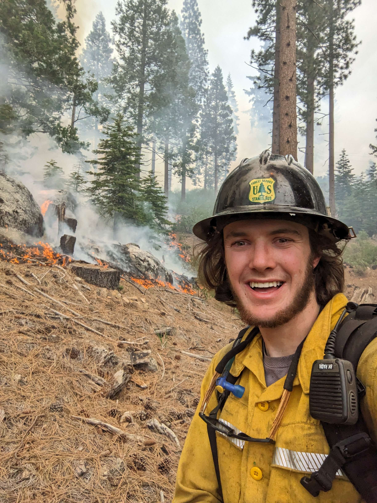

I spent two fire seasons on the Groveland Hotshots in California's Stanislaus National Forest. That experience is why I ended up in wildfire GIS. My capstone with the Utah Division of Forestry, Fire & State Lands uses deep learning to find structures in Utah's highest-risk wildland-urban interface, and I'm still working on that project with Utah DNR/FFSL today.
I finished my undergrad at the University of Utah in Geography and Parks, Recreation & Tourism (emphasis in Natural Resource Recreation Planning and Management) with a minor in Earth Science. I'm now finishing my M.S. in Geographic Information Science, focused on high performance computing, deep learning, and remote sensing.
I also do research with the Department of Geology & Geophysics under Dr. Cari Johnson, mapping sediment change where the Colorado River meets Lake Powell in Lower Cataract Canyon. The river is cutting through decades of stored sediment as the reservoir drops. Drones are banned in the recreation area, so we rely on ground-based photogrammetry and multi-temporal LiDAR instead.
When I'm not working I'm usually outside, running, rafting, canyoneering, or backpacking somewhere on the Colorado Plateau.
Two seasons in the Stanislaus National Forest as Lead EMT and Swamper.
B.S. Geography & Parks, Recreation and Tourism, Earth Science minor. M.S. GIS, defending August 2026.
HRWUI structure identification for HB48, and Cataract Canyon sediment research under Dr. Cari Johnson.
Thirteen skills, five projects
Every skill from the program's Table 1 and the courses that show it. The first tag is the strongest evidence. Dashed tags are supporting evidence.
Get in touch
Email: magnus.tveit1@gmail.com
GitHub: github.com/magnustveit1